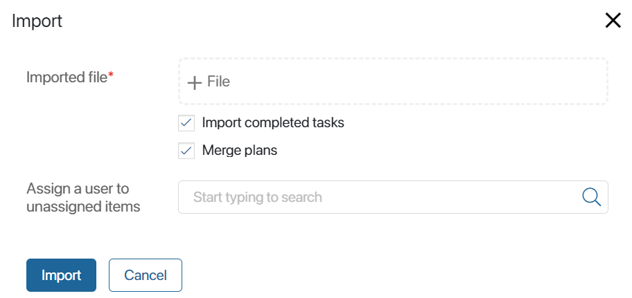
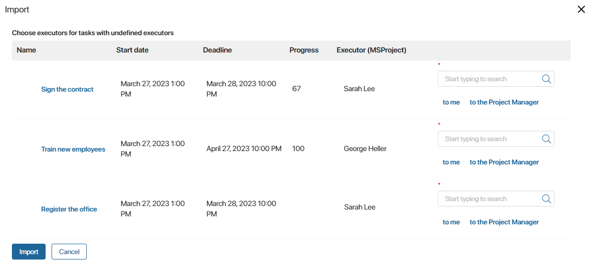

If you are working with external project management systems like MS Project, you can use the project plan import and export feature. You can also transfer a plan from one BRIX company to another.
Import a project plan
You can import a project plan from an .mpp or .xml file by adding its tasks to an existing plan version. As a result, a new plan version will be created. It will include all tasks from the original version, and imported tasks will be added to them.
To import a project plan:
- On the project page, click the Project Schedule tab and click Edit.
- Select a project plan version in the search field of the toolbar.
- Click the button.
- In the provided window, upload an .mpp or .xml file and configure the settings:
- Import completed tasks. You can add only active plan tasks from an external system to the current plan. To do this, clear the check box in this option.
- Merge plans. This option allows you not to make duplicates of tasks with the same ID. In this case, the existing task will be replaced by the imported task.
- Assign a user to unassigned items. Select the person responsible for imported tasks with executors whose full names are not found among BRIX users. All these tasks will be assigned to the selected executor once import is completed. If you leave the field empty, you can select executors for each task during import.

- Click Import.
Once the import process is completed, you will see the new project plan version with the imported tasks added to the previously existing ones. This version is automatically saved.
In the imported tasks:
- The nesting is preserved.
- The Name, Executor, Start date*, and End date* fields are filled out with data from the external system.
- If the initial task type is not supported by the system, the Type* field is set to Task, and the associated Control* field is set to Notify when the task is completed.
- All task executors are automatically assigned the permissions granted to Project Participants.
If the plan is transferred from another BRIX company, the import will also involve custom fields with the String, Number, Yes/No switch, Date/time, Category, Money, Account, Phone number, Email, Full Name, Link, Role, and Users types. The fields will be displayed in imported tasks with the data filled in. It is important that the fields and their data types match on both system sites. Please note that custom fields with the App, Arbitrary app, Files and Image data types are not included in the plan import.
After the plan has been imported:
- If there are users responsible for the imported tasks that need permissions different from those of the Project Participant, contact the administrator.
- In Process type tasks, manually set up the input parameters of the imported process. To do that, open the task form and enter the data in the Business Process section.
Executor conflicts
If the executors of the imported tasks are not BRIX users, and you haven’t assigned a user responsible for these tasks, you will be asked to assign other executors during import. You can:
- Assign any user by clicking the magnifying glass icon.
- Assign the tasks to yourself by clicking to me.
- Assign the tasks to the project manager by clicking to the Project Manager.
When you assign an executor for each task, click Import.

Export a project plan
You can export a project plan as an .mpp or .xml file:
- On the project page, click the Project Schedule tab and click Edit.
- Select the project plan version that you want to export in the search field of the toolbar.
- In the toolbar, click and select .mpp or .xml.
If there are custom fields in the project plan, their values can be transferred to another BRIX company. The data types involved in plan export are the same as those in plan import.
The project plan file will be downloaded to your PC.
Found a typo? Select it and press Ctrl+Enter to send us feedback